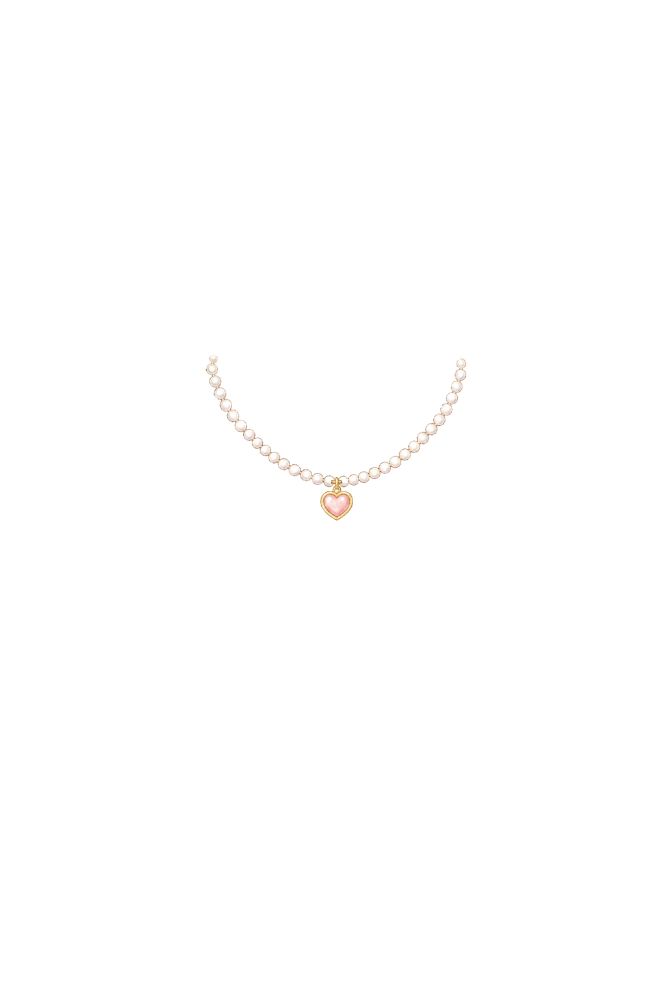
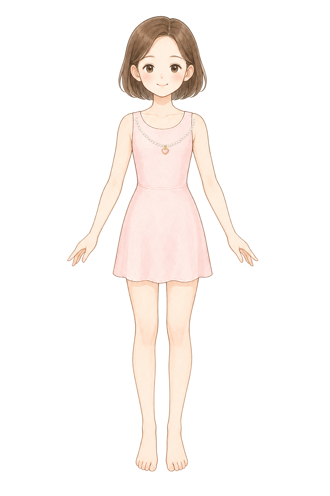
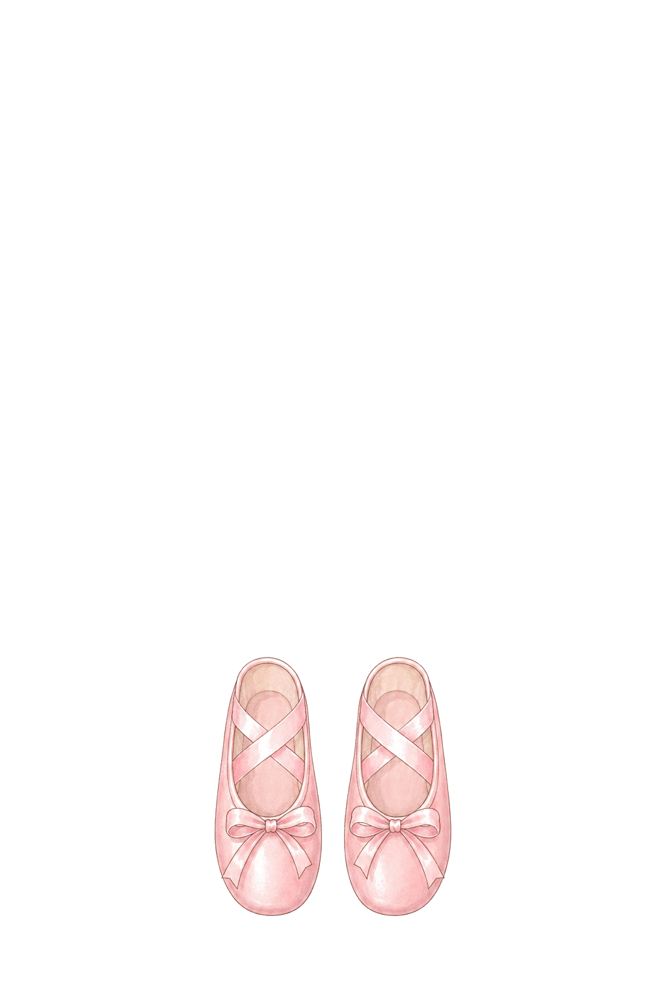
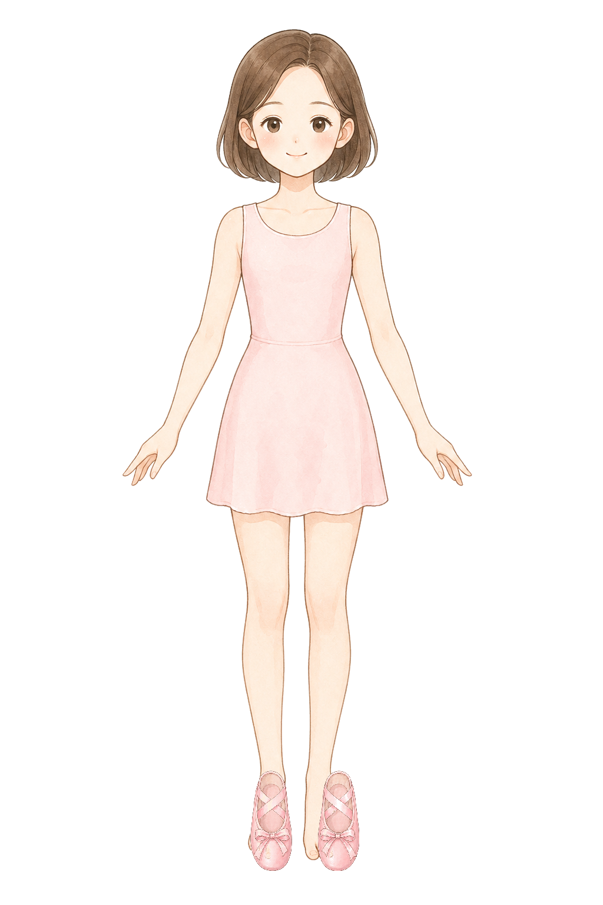

Base: style-d-encyclopedia-clean-base. Necklace and shoes are generated first, then normalized into the selected anchor slots.
necklace
Necklace: tiny heart pearl fit
ok
BaseCutout

NormalizedComposite

single small delicate princess necklace layer for a children dress-up game, original pastel storybook encyclopedia illustration, soft watercolor-like coloring, clean fine linework, tiny pearl chain with one very small heart charm, front view, centered on a pure white 1024 by 1536 canvas, draw only the necklace and no body, no neck, no dress, no mannequin, place the necklace near canvas center x 512 y 405, keep the whole necklace inside x 400 to 624 and y 360 to 480, total width no more than 224 pixels, small enough to fit inside the model shoulders and around the neckline, no earrings, no tiara, no text, no watermark
shoes
Shoes: ribbon ballet fit
ok
BaseCutout

Left normalizedRight normalizedComposite

pair of simple ribbon ballet shoes layer for a children princess dress-up game, original pastel storybook encyclopedia illustration, soft watercolor-like coloring, clean fine linework, front view, draw only two shoes and no legs, no socks, no body, no mannequin, pure white 1024 by 1536 canvas, place the left shoe near canvas area x 394 to 526 and y 1308 to 1478 with toe near x 450 y 1436, place the right shoe near canvas area x 508 to 640 and y 1308 to 1478 with toe near x 572 y 1436, keep the shoes small and aligned as a matched pair for a front-facing paper doll, no text, no watermark